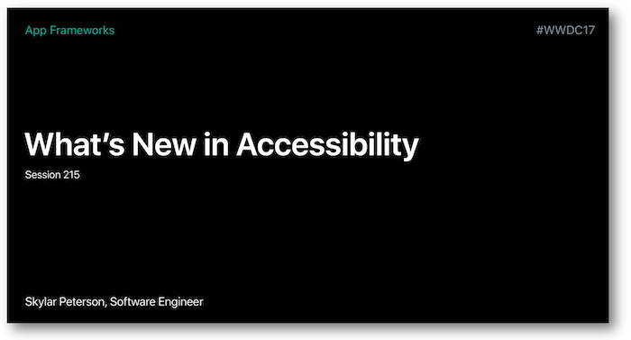
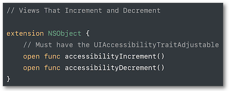
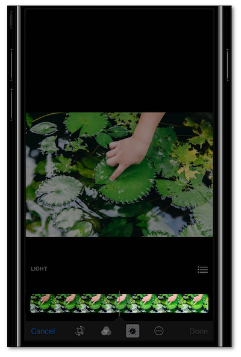

WWDC 2017 : What's New in Accessibility
This video available on the official Apple website (session 215) points out the main iOS11 accessibility features.


Various contents and their video timelapse are indicated hereunder:
-
Text detection in image (07:07) ⟹ iOS 11 new feature
-
Improved photo description (08:01) ⟹ iOS 11 new feature
-
Type to SIRI (11:37) ⟹ iOS 11 new feature
-
Accessibility Inspector (15:35)
-
UIAccessibilityProtocol (21:14)
-
Attributed Accessibility Properties (26:07) ⟹ iOS 11 new feature
-
Accessibility Container Type (27:20) ⟹ iOS 11 new feature
-
Custom actions (35:43)
-
Default activation (37:38)
-
Adjustable (38:22)
-
Pass through (39:40)
-
Custom scrolling (41:02)
-
Drag & Drop (42:54) ⟹ iOS 11 new feature
During this presentation, the following solutions for accessibility development pitfalls are suggested thanks to a simple application (take a look at it):
-
How to define an (in)accessible element? (31:10)
-
How to fill the
labelandvalueproperties? (29:59) -
How to gather several elements into a single one? (31:50)
Thereafter, the selection of a title will give rise to the video playback directly at the proper moment.
Text detection in image (07:07) #
It's now possible to find out if some text is incrusted inside an image.
This basic detection that can be done thanks to a simple tap with 3 fingers will vocalize the text to someone who
can't initially read it.
Improved photo description (08:01) #
The vocalization of a photo description is a new Voice Over feature that is fired thanks to a simple tap with 3 fingers.
A very simple detection of the context, the faces and their expressions is then vocalized to a visual impaired user.
Type to SIRI (11:37) #
Very usefull feature for people who can't use SIRI vocally or who are willing to make some requests in a discreet way.
To enable this feature, go to Accessibility in the Settings to make the activation effective.
Accessibility Inspector (15:35) #
In this part, the Xcode accessibility inspector instrument is used to show basics about an accessibility app audit.
Examples are provided without explaining in depth the tool itself to which a former Apple session (2016 - 407) is dedicated.
UIAccessibilityProtocol (21:14) #
Reminder on the UIAccessibility informal protocol fundamentals that will be used during the presentation.

Attributed Accessibility Properties (26:07) #
NSAttributedString can be used in order to customize the way to vocalize the label, value and hint accessibility properties.

Among the provided examples, one deals with the vocalization of a specific element in a foreign language.
All usable keys can be found on the Apple official documentation.
Accessibility Container Type (27:20) #
A new accessibility typed container is available in iOS 11.

The notion of container already existed in iOS but VoiceOver couldn't know the kind of container until now.
Custom actions (35:43) #
Many different actions may be attributed to an element thanks to a bunch of accessibilityCustomAction.

As soon as this element is selected, a vertical swipe with one finger will be proposing the choices of possible actions.
The programming implementation of this feature is detailed in the development part.
Default activation (37:38) #
In order to limit or make them easier all the user VoiceOver handlings, it's possible to trigger appropriate actions as soon as an element is activated thanks to a double tap.
Adjustable (38:22) #
When you want to change the value provided by elements such as slider or picker in a very fluid way, two methods have to be implemented:

As soon as the view is selected, a vertical swipe with one finger increases (up) or shrinks (down) the value.
The programming implementation of this feature is detailed in the development part.
Pass through (39:40) #
If a VoiceOver user double taps with one finger, holds it and passes it through the panning gesture, a finer adjustment of a slider can be obtained.

The accessibilityActivationPoint attribute will allow a fine location in the panning gesture.

Custom scrolling (41:02) #
The VoiceOver basic scrolling is based on a 3 fingers swipe but it can be customized thanks to the accessibilityScroll method belonging to the UIAccessibilityAction protocol.
Drag & Drop (42:54) #
This new feature isn't explained in depth but only its 2 overriding principles are presented: the drag sources and the drop points.
Their use is briefly described in an example at the end of the video.